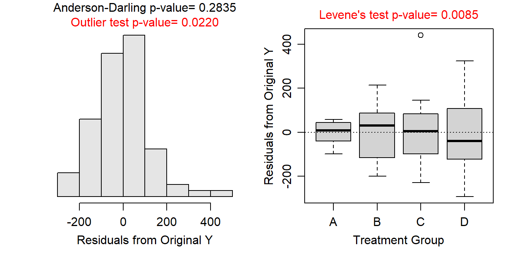
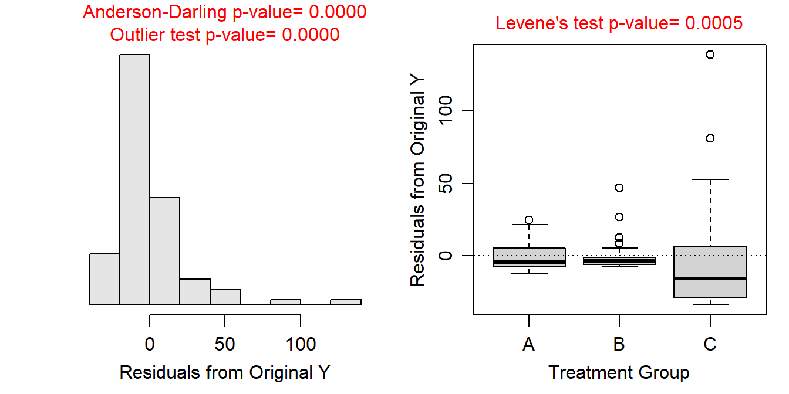
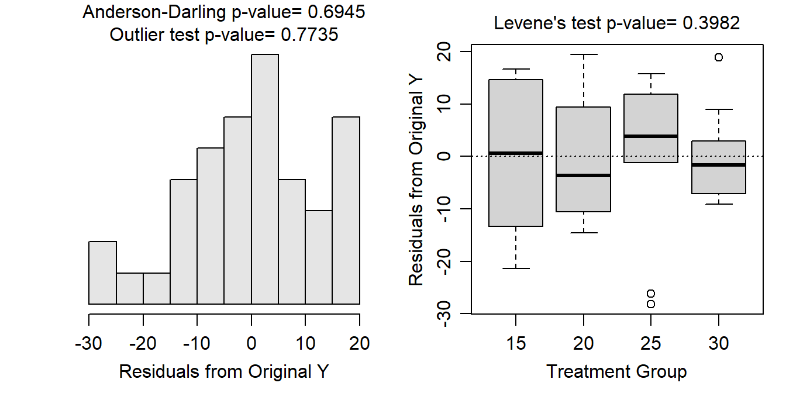
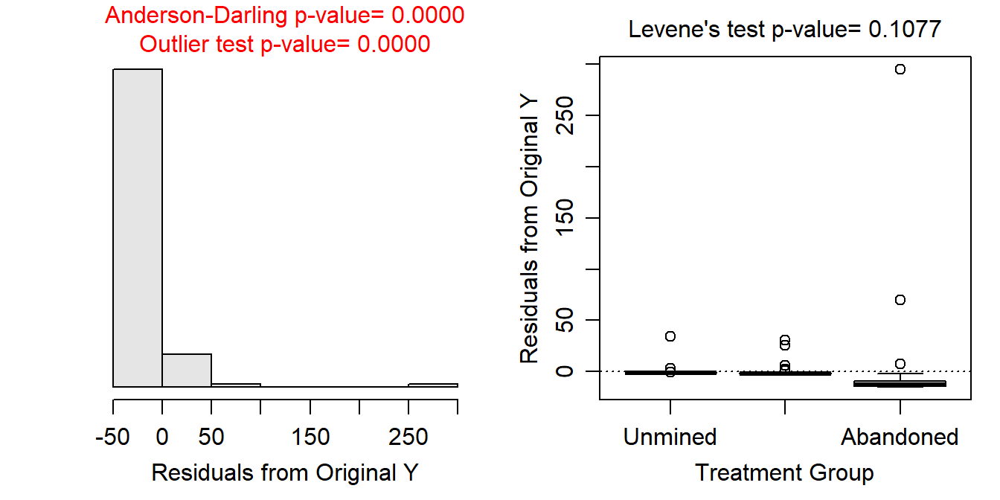

The variances do not appear to be equal as suggested by the Levene’s test p-value (=0.0085) and the somewhat different sized boxes in the boxplots below. The residuals appear to be normal according to the Anderson-Darling p-value (=0.2835) and the histogram below does not look strongly skewed. There is evidence for a significant outlier according to the outlier test p-value (=0.0220) and the distinctly “odd” individual on the boxplot for Group C.
> df1 <- read.csv("http://derekogle.com/NCMTH207/modules/ce/data/ANOVA1Assumptions1.csv")
> lm1 <- lm(measure~group,data=df1)
> assumptionCheck(lm1)
The residuals appear to be not normal according to the Anderson-Darling p-value (<0.00005) and the strongly right-skewed histogram below. There is evidence for a significant outlier according to the outlier test p-value (<0.00005) and by points outside the “whiskers” in the boxplot of residuals. The variances do not appear to be equal based on the different sized boxes in the boxplots below and the Levene’s test p-value (=0.0005).
> df2 <- read.csv("http://derekogle.com/NCMTH207/modules/ce/data/ANOVA1Assumptions2.csv")
> lm2 <- lm(measure~group,data=df2)
> assumptionCheck(lm2)
The variances appear to be equal as suggested by the Levene’s test p-value (=0.3982). The boxes in the boxplot appears different sized, so the p-value results could be due to the small sample size. The residuals appear to be normal according to the Anderson-Darling p-value (=0.6945) and the histogram below does not look strongly skewed. There is no evidence for a significant outlier according to the outlier test p-value (=0.7735). The boxplots of residuals suggest possible outliers though in the 25oC and 30oC treatments. From this, I conclude that these three assumptions are tentatively met.
The individuals are likely independent. The background noted that the eggs were put into individual containers that were then assigned a temperature. It is not possible for a container to have multiple temperatures, so there is among-group independence. Each container had only one egg so there is likely within-group independence. There is not information about where the eggs came from but under the assumption that they did not all come from the same or only a few nests then this is likely not a dependency problem. All-in-all this assumption is likely largely met.
> d <- read.csv("turtles.csv")
> d$Temperature <- factor(d$Temperature)> lm3 <- lm(Days~Temperature,data=d)
> assumptionCheck(lm3)
There is a clear issue with normality here as shown by the Anderson-Darling p-value (=<0.00005) and the histogram below is strongly skewed. In addition there is a clear outlier to the far right (in the abandoned group) as shown by the outlier test p-value (=<0.00005) and the boxplots of residuals. The variances appear to be equal according to the Levene’s test p-value (=0.1077), but this p-value is likely compromised by the normality and outlier issues. The huge outlier also makes the boxplots of residuals largely useless for examining equal variances. It is clear that there are violations of these three assumptions.
The individuals are likely independent but this is not abundantly clear. The measurements are from 120 unique rivers, so there is not multiple measurements on the same river. There is among-group independence as it is not possible for a stream to be in two land uses. Some of the rivers are likely in the same watershed and would likely share some characteristics due to that (e.g., geological, land use, etc.) but this is not the case for all streams. The data are likely independent enough for our purposes.
> im <- read.csv("https://raw.githubusercontent.com/droglenc/NCData/master/AcidMineDrainage.csv")
> im$use <- factor(im$use,levels=c("Unmined","Reclaimed","Abandoned"))
> assumptionCheck(lm4)